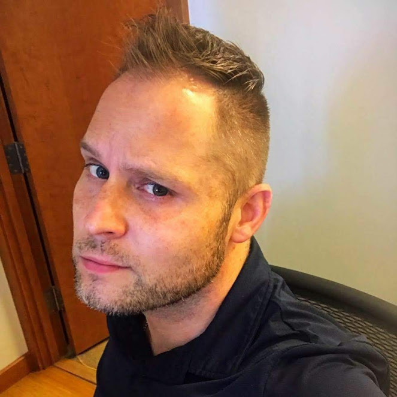

Josh is originally from Vashon and comes to us from the restaurant industry as a chef. He has been shining with his passion for front-end CSS.
AJ
AJ comes to Code Fellows and has only lived in Seattle for a short amount of time. He has exibited very strong JavaScript logistical knowledge.
Gabe
Gabe is originally from Seattle and enjoys reading, the outdoors and time with friends He comes to Code Fellows with an open heart and mind to learning new things.

Brad
Brad is originally from Washington DC but has been in Seattle since 2009. Coming from very strong roots in art and music, he hopes to take his knowledge from Code Fellows and impliment it for future creative endeavors.